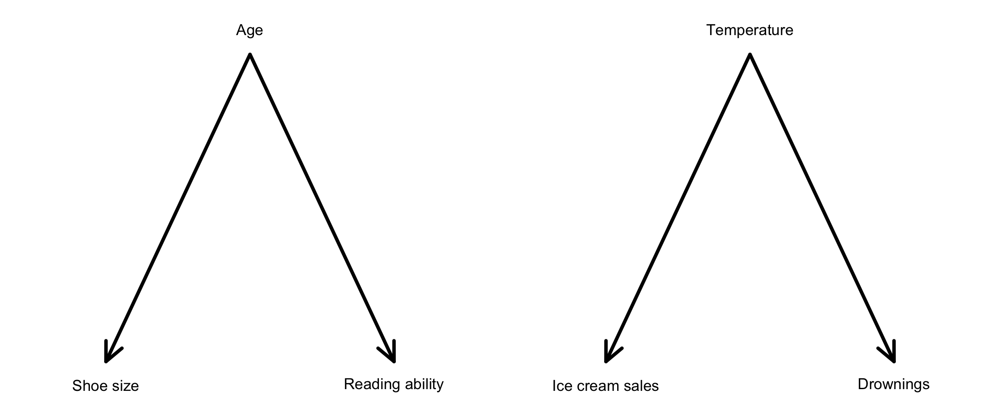
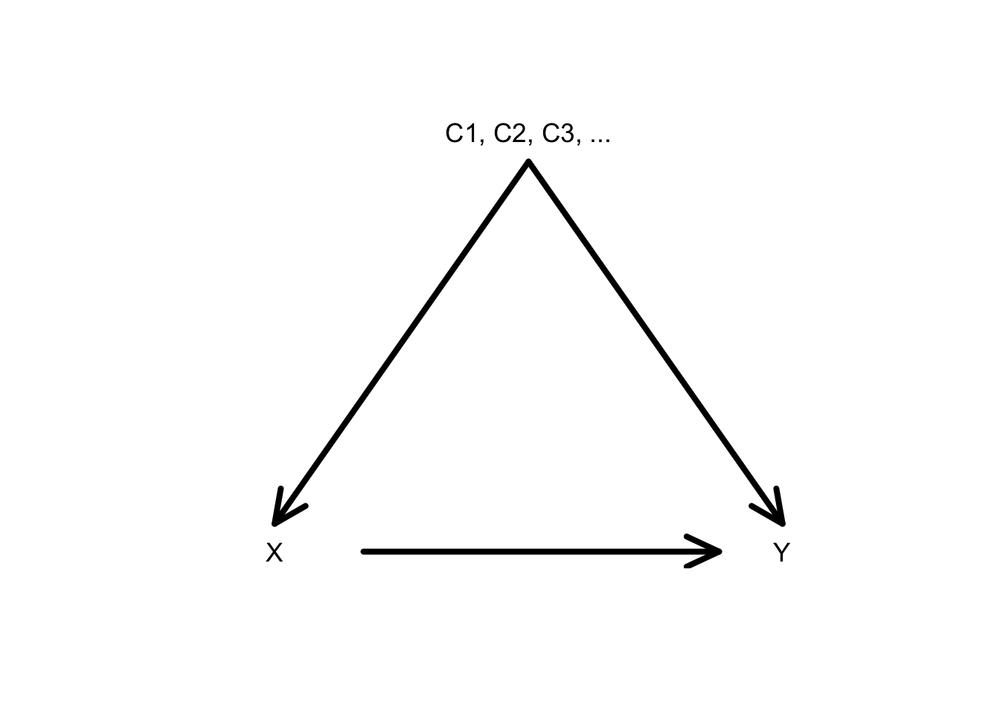
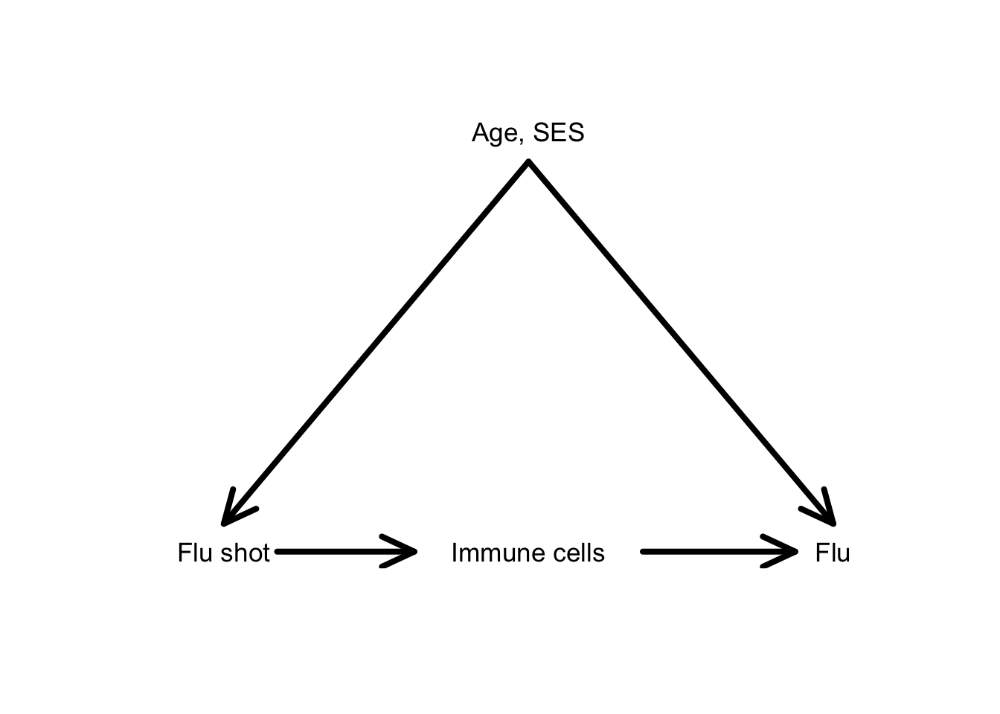
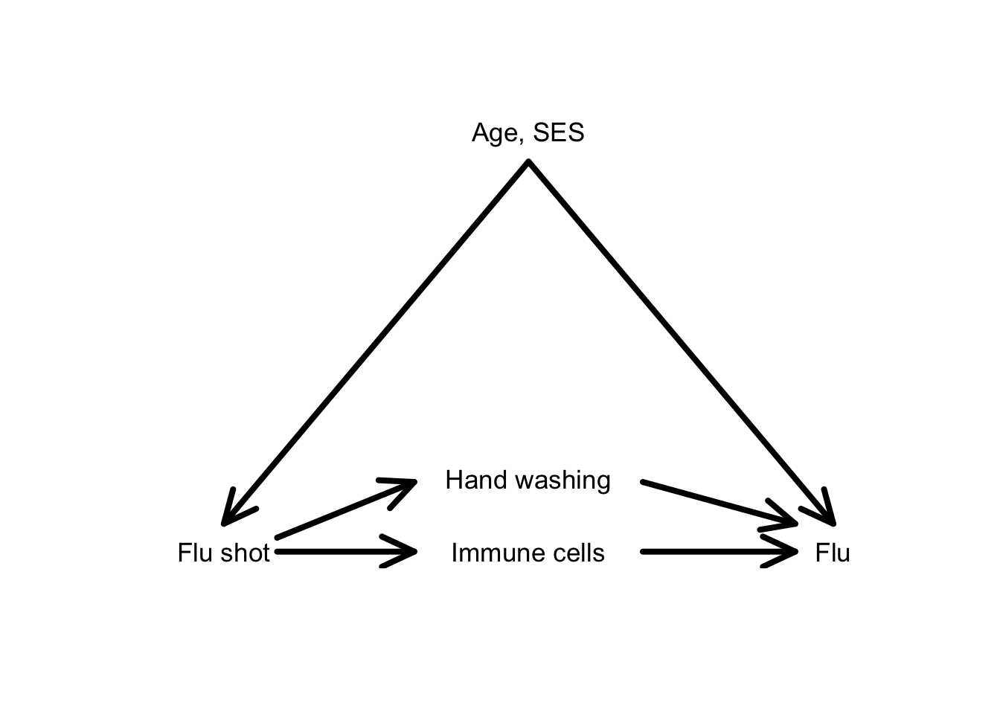

Topic 13 Causal Inference
Learning Goals
- Connect the idea of a causal effect to the idea of confounding
- Use causal diagrams to identify which variables should be “controlled”/“adjusted” for in analyses
- Use regression models to answer causal questions
Discussion
“Correlation does not imply causation.”
Your instructor finds this saying vacuous and “avoidist”.
- “Avoidist”: cultural tendency to (unreasonably) avoid talking about a topic
- Why do people always jump to this saying?
- Shoe size and reading ability are positively correlated
- Ice cream sales and drownings
- Can you think of others?
- Question: What causal diagrams are behind these situations?

- Holding age constant would show zero effect of shoe size on reading ability
- Holding temperature constant would show zero effect of ice cream sales on drownings
In most research settings, there is an arrow between the variable of interest and the response and many potential confounding variables:

- The goal of causal inference is quantitatively estimating the effect of \(X\) on \(Y\) along the direct arrow.
- The “isolated effect” that we’ve been referring to is actually another way of phrasing the causal effect.
- If we can measure all confounders, including all confounders in a regression model allows us to hold those variables constant.
- Also called “controlling for” confounders
- Also called “adjusting for” confounders
In a non-interaction model, \(\beta_1\) is of interest (Y ~ X + C1 + C2):
\[ E[Y] = \beta_0 + \beta_1\,X + \beta_2\,C_1 + \beta_3\,C_2 \]
An interaction model also allows us to hold the confounders constant (Y ~ X*C1 + C2):
\[ E[Y] = \beta_0 + \beta_1\,X + \beta_2\,C_1 + \beta_3\,X\times C_1 + \beta_4\,C_2 \]
Or Y ~ X*C2 + C1:
\[ E[Y] = \beta_0 + \beta_1\,X + \beta_2\,C_2 + \beta_3\,X\times C_2 + \beta_4\,C_1 \]
(You’ll practice in the Exercises.)
Overadjustment bias
It is tempting to put as many variables as we can into models to hold constant any potential confounders.
- It is very easy to do harm here!
- It is possible to overadjust.
- To understand the causal effect of the flu shot, we should adjust for (hold constant) age and socioeconomic status.
- Do we really want to adjust for immune cell level in the time period after the shot?
- Immune cell levels are a mediator of the effect of the flu shot on subsequent flu.
- This variable lies on a causal pathway between the variable of interest and the response.

Would we ever want to adjust for mediators?

- The total effect of the flu shot on subsequent flu is the effect through both the immune cells and hand washing pathways.
- If we adjust only for age and SES (hold them constant), we’ll estimate the total effect.
- The direct effect (not pictured) would be the effect along an arrow directly from
Flu shottoFlu. - We are interested in the indirect effect through
Immune cells.- If we adjust for age, SES, and hand-washing, we can estimate this indirect effect.
Instead of…
“Correlation does not imply causation.”
…let’s say
“Properly adjusted correlations are causation.”
Exercises
You won’t need R for these conceptual exercises.
Exercise 1
Draw a causal diagram corresponding to a study of how yoga participation affects stress levels. What confounding variables are likely present? What possible mediating variables would we want to adjust for in our analysis? What mediating variables would not want to adjust for?
Exercise 2
Suppose that in the yoga study, we conclude that we need to adjust for the confounding variables of age and prior lifetime history of exercise. The variables recorded are:
yoga: yes/no participationstress: hours per week under stressage: in yearsexercise: in hours per week
Write out the multiple regression model (without interaction) that could be used to estimate the causal effect of yoga on stress levels.
Is there a real, meaningful effect of yoga on stress levels? Describe in detail how we could answer the question.
Suppose you made a plot that indicates an interaction between
yogaandagein predicting stress levels (ageandexerciseare still confounders). What would this plot look like?- Continuing from (c), consider the research question: “How does the causal effect of yoga on stress differ across ages?”
- Write down the regression model formula that would allow you to answer this research question.
- There isn’t necessarily a single coefficient from this model that will answer the question, but describe how you could use the model to make predictions that would answer this research question.
Exercise 3
Suppose now that yoga and age are now measured differently:
yoga: hours per week of participationage: two categories “young” and “old”
Suppose you made a plot that indicates an interaction between
yogaandagein predicting stress levels (ageandexerciseare still confounders). What would this plot look like?- Continuing from (a), consider the research question: “How does the causal effect of yoga on stress differ across ages?”
- Write down the regression model formula that would allow you to answer this research question.
- There are two coefficients in this model that are of interest. What are they, and how can we interpret them in a contextually meaningful way?
- Describe how we could assess if there is a real, meaningful difference in effects of yoga between the young and old.